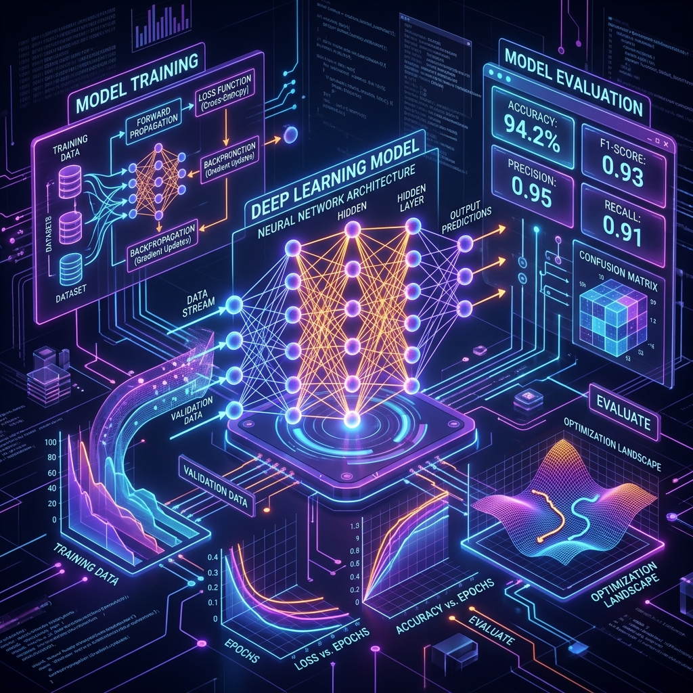

Concepteur de pipelines de données & d'architectures RAG
Designer of data pipelines & RAG architectures
Passionnée par l'exploitation des données et les solutions d'intelligence artificielle. Curieuse de nouvelles technologies. Je conçois des flux d'ingestion robustes, orchestre des pipelines ETL/ELT complexes et intègre des architectures d'IA (RAG, bases vectorielles).
Passionate about data exploitation and AI solutions. Curious about new technologies. I design robust ingestion flows, orchestrate complex ETL/ELT pipelines, and integrate AI architectures (RAG, vector databases).
Parcours & Compétences
Journey & Skills
Mon profil
My profile
Curieuse et dotée d'une grande capacité d'apprentissage, je dispose de trois années d'expérience en analyse de données financières. Actuellement en fin de formation Data Engineer chez OpenClassrooms. J'interviens sur la mise en place des pipelines de données robustes, l'orchestration de flux complexes (ETL/ELT), la qualité de la donnée et l'intégration de solutions d'IA modernes (RAG, bases vectorielles).
Curious and highly adaptable, I have three years of experience in financial data analysis. Currently in the final stage of my Data Engineer training at OpenClassrooms. I specialize in setting up robust data pipelines, orchestrating complex flows (ETL/ELT), data quality, and integrating modern AI solutions (RAG, vector databases).
Stagiaire Data Engineer — O3 Experts (Tours)
Data Engineer Intern — O3 Experts (Tours)
Pipeline de données RSE, intégration RAG (Mistral AI & FAISS), services backend avec FastAPI, vectorisation sous Docker.
CSR data pipeline, RAG integration (Mistral AI & FAISS), backend services with FastAPI, containerization under Docker.
Formation Data Engineer (Bac+5) — OpenClassrooms
Data Engineer Training (Master's level) — OpenClassrooms
Mise en place de pipelines de données, optimisation de bases de données, stockage cloud et application de techniques de Machine Learning.
Data pipeline implementation, database optimization, cloud storage, and application of Machine Learning techniques.
Technicienne Lutte Contre la Fraude — CPAM d'Indre-et-Loire
Anti-Fraud Technician — CPAM d'Indre-et-Loire
Requêtes statistiques Oracle SQL, analyse de signalements, contrôle de conformité et rédaction de rapports d'investigation.
Oracle SQL statistical queries, alert analysis, compliance checks, and report investigation.
Assistante administrative et comptable — VYV 3
Administrative & Accounting Assistant — VYV 3
Gestion budgétaire, reporting et tableaux de bord du CSE, rapprochement bancaire et opérations comptables.
Budget management, CSE reporting and dashboards, bank reconciliation, and accounting operations.
Stack Technique
Tech Stack
Langages & Outils Data
Languages & Data Tools
Data & AI Engineering
Databases & Cloud
Outils & Méthodes
Tools & Methods
Mes Projets Techniques
My Technical Projects
Découvrez une sélection de projets de Data Engineering, d'orchestration de flux et d'architectures d'IA stockés sur mon compte GitHub.
Discover a selection of Data Engineering, flow orchestration, and AI architecture projects stored on my GitHub account.
 IA & RAG
AI & RAG
IA & RAG
AI & RAG
MVP RAG Puls-Events
🎯 Objectif : Recommander des événements culturels locaux via un chatbot intelligent.
⚙️ Solution : Pipeline RAG hybride (recherche géographique SQL Haversine et base vectorielle pgvector) avec repli sur agent web autonome (smolagents).
📊 Résultats : Ingestion de 1236 chunks OpenAgenda, latence < 1.5s et historique persistant.
💎 Valeur ajoutée : Sécurité des accès et suite de tests d'intégration automatisés avec pytest.
🎯 Goal: Recommend local cultural events via an intelligent chatbot.
⚙️ Solution: Hybrid RAG pipeline (Haversine SQL geographic search and pgvector) with an autonomous web agent fallback (smolagents).
📊 Results: Ingestion of 1236 OpenAgenda chunks, response latency < 1.5s, and persistent chat history.
💎 Added Value: Access security and automated integration tests with pytest.
 Ingestion & ETL
Ingestion & ETL
Ingestion & ETL
Ingestion & ETL
POC Avantages Sportifs
🎯 Objectif : Évaluer la faisabilité d'un programme d'activité physique en calculant les trajets domicile-travail des salariés.
⚙️ Solution : Ingestion automatique de données RH, géolocalisation via API Google Maps et validation de la qualité des données.
📊 Résultats : Orchestration bout-en-bout et alertes qualité de données proactives.
💎 Valeur ajoutée : Réduction de 80% des coûts d'API via cache local et détection d'anomalies (Great Expectations).
🎯 Goal: Assess physical activity program feasibility by calculating employee commuting distances.
⚙️ Solution: Automated HR data ingestion, geolocation via Google Maps API, and strict data quality validation.
📊 Results: End-to-end orchestration and proactive data quality alerts.
💎 Added Value: 80% reduction in API costs via local caching and anomaly detection (Great Expectations).

Machine Learning Machine LearningML-Prédiction
🎯 Objectif : Prédire la consommation d'énergie et les émissions de CO2 de bâtiments de Seattle à partir de caractéristiques physiques.
⚙️ Solution : Feature Engineering complet, comparaison de modèles de régression et optimisation d'hyperparamètres.
📊 Résultats : Modèle prédictif performant avec un score R² final de 0.82.
💎 Valeur ajoutée : Industrialisation (MLOps) via le packaging du modèle en microservice BentoML conteneurisé.
🎯 Goal: Predict energy consumption and CO2 emissions of Seattle buildings based on physical features.
⚙️ Solution: Comprehensive feature engineering, regression model comparisons, and hyperparameter optimization.
📊 Results: High-performance predictive model with a final R² score of 0.82.
💎 Added Value: Industrialization (MLOps) via packaging the model into a containerized BentoML microservice.
Démarrons un projet ensemble
Let's Start a Project Together
Vous cherchez un profil de Data Engineer rigoureux, prêt à renforcer vos équipes d'ingénierie ? Écrivez-moi !
Looking for a rigorous Data Engineer ready to strengthen your engineering teams? Write to me!
Mes Coordonnées
My Contact Details
Localisation
Location
37550 Saint Avertin (Mobile région Île-de-France)
37550 Saint Avertin (Mobile in Île-de-France region)